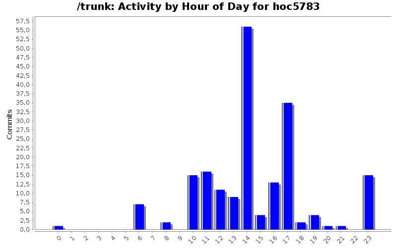
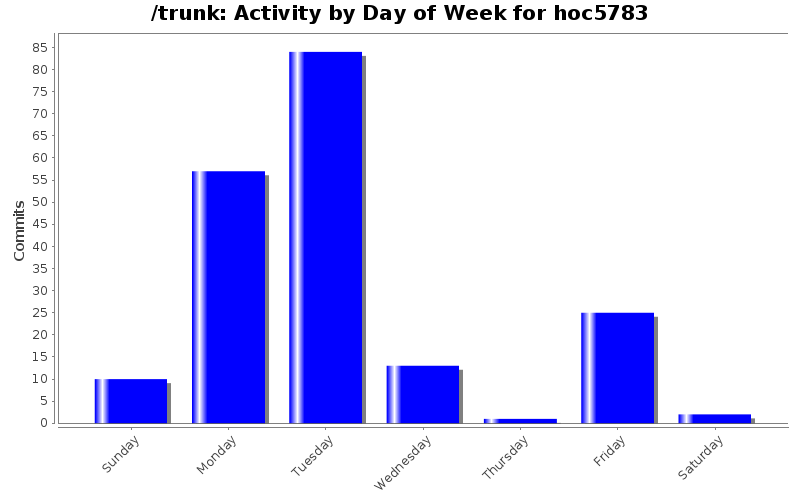
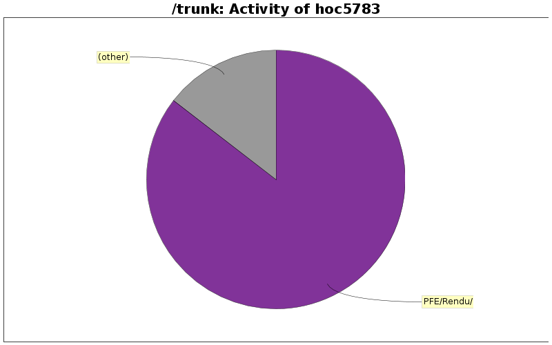

| Directory | Changes | Lines of Code | Lines per Change |
|---|---|---|---|
| Totals | 192 (100.0%) | 141197 (100.0%) | 735.4 |
| PFE/Rendu/ | 8 (4.2%) | 120719 (85.5%) | 15089.8 |
| PFE/Doc/4-RapportSynthese/ | 39 (20.3%) | 5078 (3.6%) | 130.2 |
| PFE/Doc/6-GestionProjet/ | 7 (3.6%) | 5008 (3.5%) | 715.4 |
| PFE/Doc/5-RapportFinal/ | 32 (16.7%) | 4459 (3.2%) | 139.3 |
| PFE/Doc/0-GestionCouts/ | 14 (7.3%) | 2509 (1.8%) | 179.2 |
| PFE/Doc/Intermediaire/ | 23 (12.0%) | 2035 (1.4%) | 88.4 |
| PFE/Doc/2-Intermediaire/ | 7 (3.6%) | 498 (0.4%) | 71.1 |
| PFE/Doc/Preliminaire/ | 17 (8.9%) | 474 (0.3%) | 27.8 |
| PFE/Doc/3-Finale/ | 2 (1.0%) | 231 (0.2%) | 115.5 |
| EP952/Raport/ | 3 (1.6%) | 179 (0.1%) | 59.6 |
| PFE/Doc/1-Preliminaire/ | 6 (3.1%) | 7 (0.0%) | 1.1 |
| PFE/SimulationArena/ | 1 (0.5%) | 0 (0.0%) | 0.0 |
| PFE/Simulation Aréna/Version 1 ( Simple )/ | 6 (3.1%) | 0 (0.0%) | 0.0 |
| PFE/Doc/Images/ | 15 (7.8%) | 0 (0.0%) | 0.0 |
| PFE/Doc/Bibliographie/ | 3 (1.6%) | 0 (0.0%) | 0.0 |
| PFE/Doc/4-Synthese/ | 9 (4.7%) | 0 (0.0%) | 0.0 |

+ MON DERNIER COMMIT POUR LES RAPPORTS !
(Fabien, garde ces documents si tu y tiennes tellement, perso je n'en veux pas :p)
Philippe
40222 lines of code changed in 7 files:
+ Rapports rendus
59822 lines of code changed in 5 files:
+ Corrections à la dernière minute.
27 lines of code changed in 3 files:
+ Dernières modifs du rapport de gestion des coûts.
113 lines of code changed in 1 file:
+ Mise en page du rapport.
2222 lines of code changed in 3 files:
+ Nouveau dossier dédié à la gestion de projet => Rapport à part.
1560 lines of code changed in 4 files:
+ Séparation des rapports : final, gestion de projet et gestions des coûts.
0 lines of code changed in 1 file:
+ Mise en forme du rapport avec corrections.
2464 lines of code changed in 10 files:
+ Voilà le rapport gestion des coûts.
+ Veuillez faire une relecture pour les fautes de français.
Philippe
1133 lines of code changed in 7 files:
+ Ajout du CDC comme demandé.
34 lines of code changed in 1 file:
+ Ajout d'éléments manquants
27 lines of code changed in 1 file:
+ S'il te plait arrête de travailler sur la même partie que moi car ça créer de$
$le mois prochain surement). Donc il n'y a pas d'incohérence entre les 2 taux si tu as bien lu le rapport (2010 c'est officiel et 2011 c'est une prévision statistique).
102 lines of code changed in 3 files:
IMPORTANT : Fabien, tu es incorrigible ! Ce n'est pas que je ne fais pas de commit tous les heures, ça ne veut pas dire que je ne bosse pas ! De plus tes petits copier-coller, je sais le faire aussi ! Voire peut-être mieux puisque c'est moi qui l'a rédigé.
+ Modif de quelques valeurs sur gestion des coûts / synthèse.
+ Rédaction en cours du rapport de gestion des coûts ainsi que le calcul des indicateurs (je pense avoir une piste). Donc Fabien, si tu t'ennuis fais autres choses, ne vient pas mettre le désordre dans ma partie. Une fois, finis, tu seras libre de corrigier.
Merci de votre compréhension,
Philippe
73 lines of code changed in 3 files:
+Suppression des références qui n'existent plus.
+Gestion des coûts
238 lines of code changed in 2 files:
+ Gestion des coûts pour le rapport de synthèse sera fini ce soir au plus tard.
+ EntrepiseST pour Jaafar.
+ Bilan Etat de l'Art : corrections et remettre la nature du document.
+ Suppression des fichiers non utilisés dans les dossiers des rapports.
246 lines of code changed in 9 files:
+ Relecture et de nombreux modifs. Il reste toutefois la parie D3 et la petite conclusion sur l'état de l'art pour introduire l'algorithme du marcheur que je n'ai pas encore eu le temps de relire.
228 lines of code changed in 1 file:
+ Modif du titre de nos rapports.
+ Squelette du rapport final.
3176 lines of code changed in 30 files:
+ Mise à jour pour le rapport de synthèse.
552 lines of code changed in 7 files:
+ Mise en page de la partie gestion de projet.
565 lines of code changed in 2 files:
72 lines of code changed in 2 files:
(26 more)